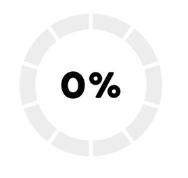

Almacenamiento Actual

Ubicación del Contenedor
Dirección: Calle 23 #30-2 a 30-74, La Esperanza Bovaca, Cali, Valle del Cauca
Proceso de Compostaje
El contenedor de compostaje inteligente realiza el siguiente proceso:
- Recepción de residuos orgánicos.
- Triturado y mezcla de materiales.
- Monitoreo de temperatura y humedad.
- Descomposición controlada.
- Producción de compost listo para usar.
Soporte y Ayuda Técnica
Si necesitas ayuda, por favor contacta a nuestro equipo de soporte:
- Teléfono: 3053461337
- Email: soporte@compostajeinteligente.com
- Chat en vivo: Haz clic aquí